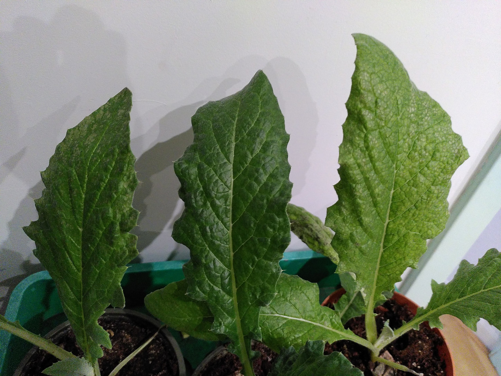

Zaaigrond
Ik zoek al een paar jaar naar goede zaaigrond voor mijn zaailingen. Veel zaailingen kweek ik op in potten of zaaitrays en dan gaat er in een jaar heel wat zaaigrond doorheen. Zeker nu met een grotere moestuin ben ik ook meer aan het zaaien en opkweken. Tot nu toe kocht ik elk jaar wel 1 of 2 zakken potgrond voor mijn kleine moestuin bij huis. Dat was dan potgrond op basis van veen. Nu, in tijden van klimaatverandering, ben ik me er van bewust dat veengebieden op grote schaal afgegraven worden voor deze potgrond. Omdat dit afgraven van veengebieden desastreuse consequenties heeft voor de aarde, wil ik het gebruik van potgrond op basis van veen zoveel mogelijk beperken en ben ik gaan zoeken naar alternatieven.
Mijn eerste ingeving was zelf een mix maken op basis van kokosvezel. Kokosvezel is echter nog geen optimaal alternatief. Ten eerste komt het van ver. Daarnaast zijn er kantekeningen aan de productie ervan. Dus eigenlijk wil ik ook het gebruik van kokosvezel minimaliseren. Ik heb echter nog geen goed alternatief gevonden dus ben ik er wel gaan experimenteren. Vorig jaar had ik kokosvezel gemengd met wat eigen gezeefde compost en wat wormenmest. Omdat kokosvezel erg veel vocht opzuigt heb ik er ook wat vermiculiet door gedaan. De mix was erg prettig in gebruik omdat het allemaal vrij fijn materiaal is, maar ik had het gevoel dat de planten nog niet helemaal tevreden waren. Mijn huidige recept van dit jaar is 2 delen kokosvezel, 2 delen wormenmest, 2 delen gezeefde potgrond, 1 deel vermiculiet en een handje lavameel. Met de wormenmest hoop ik voldoende voeding toe te voegen, en met lavameel wat extra mineralen. Mijn eigen compost was dit jaar helaas niet voldoende gecomposteerd en durfde ik er niet doorheen te doen.
Omdat ik vorig jaar al niet tevreden was over mijn zaailingen heb ik dit jaar ook wat in gekochte potgrond gezaaid of verspeend om de plantjes te kunnen vergelijken. Ik heb een zak biologische potgrond gekocht, maar achteraf was ik niet blij met deze spontane aankoop want de toevoegingen zijn dan misschien wel biologisch, de inhoud is verder 95 % veen. Na deze ontdekking heb ik snel bij de biologische supermarkt een wel duurzame potgrond gekocht van Bio-Kultura. Het eerste wat ik in de 3 soorten zaaigrond gezaaid heb waren de tuinbonen, maar die deden het in simpele moestuinaarde ook al heel goed. Daar ga ik voortaan geen potgrond meer voor gebruiken. Ik heb 3 artisjokplanten gezaaid in de verschillende soorten zaaigrond. En daar zie ik wel echt verschil. Zowel de plant in mijn eigen mix en de plant in de biologische potgrond op basis van veen hebben wat vlekjes op de bladeren en zijn wat lichter van kleur. De plant in de potgrond van Bio-Kultura had een mooie donkergroene gezonde kleur. Ook de bleekselderij en de peterselie heb ik in de verschillende soorten grond verspeend en daarnaast ook nog een plantje in een mix van moestuinaarde met wormenmest. Bij deze planten zie ik vooral een verschil in formaat, de plantjes in de gekochte potgrond groeien sneller dan in mijn eigen mix. Dit lijkt mij voor zaailingen echter niet zo’n probleem, dat halen ze later in de moestuin wel weer in. Mijn conclusie is nu dat ik goede potgrond moet kopen voor de planten die veel en goede voeding nodig hebben. Daarnaast ga ik meer experimenteren met minder goede maar wel duurzame potgrond voor mijn andere zaailingen die eigenlijk vrij snel de grond in gaan en daar hun voeding wel vinden. Naar aanleiding van deze conclusie ben ik nu meer gaan zaaien in moestuinaarde met wormenmest en eigen compost. Dit lijkt me de meest duurzame optie voor de minder kritische planten.
 Blad van artisjokplanten gezaaid in 3 verschillende soorten potgrond. Links: biologische potgrond op basis van veen, midden: biologische potgrond van Bio-Kultura, Rechts: Mijn eigen mix.